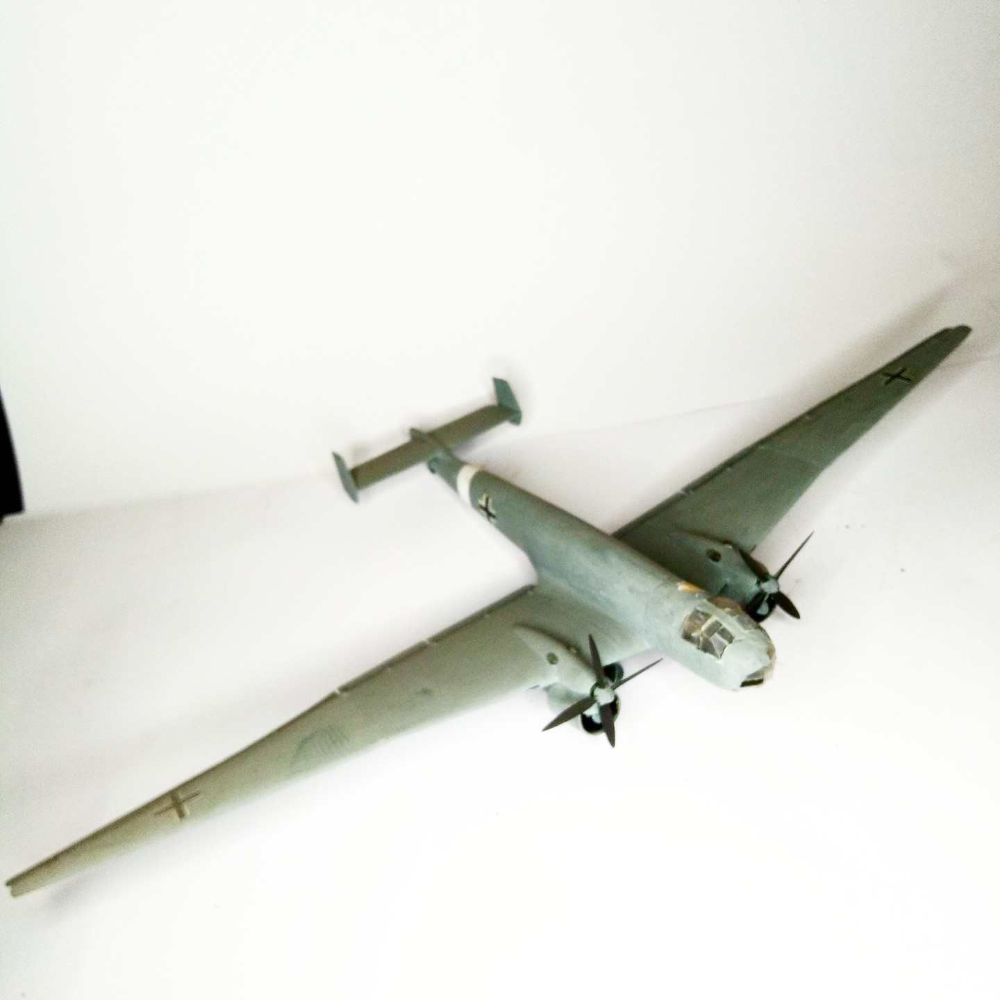

Aerei · scale model archive
Junkers Ju86 R
Junkers Ju86 R — Kit: conversion from Italeri. Scale 1/72 Extreme high altitude reconnaissance-bomber, conversion done when no kit existed yet #1/72

Photo gallery
English description
Scale 1/72
Extreme high altitude reconnaissance-bomber, conversion done when no kit existed yet
#1/72
Descrizione italiana
Extreme high altitude reconnaissance-bombardiere, conversione done when no kit existed yet.